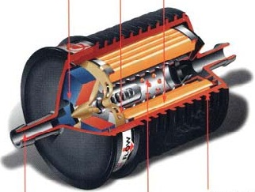

Size -2m x 2 m
Connection - 1.5 "inch brass thread
Working pressure - 19 bar(90 psi)
Operating Temperature: + 2ºC(35ºF) to+45°C(113.00°F)
Size of filter elements -20"x4"(508 mm x 115 mm)
Cup material - PP polypropylene
Safety valve: brass